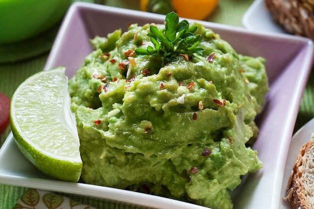

Recetas y reseñas de restaurantes
 Instagram
Instagram
Evaluando comida desde 1993
Bienvenido a la página de Morefoodporfavor, nuestro objetivo es promover y compartir recetas sabrosas de todo el mundo. Además está planeado revisar restaurantes.
-
Guacamole
¡Fácil, delicioso, rápido de preparar y la base de nuestro querido Taco Tuesday!
Para cuatro porciones:
- 
- 3 paltas maduros
- lima (or limón)
- 1/2 cebolla roja picada
- 4 tomates pequeños cortados en cuartos
- 1 diente de ajo
- salt y pimienta
- Opcional (jalapeños, pimienta de cayena, cilantro)
Pasos:
- Cortar las paltas por la mitad, entonces golpea la semilla con la cuchilla. Si la cuchilla se queda fija, gira la semilla y retírala.
- Entonces retira la piel y ponla en un bol, puedes pelarla o utilizar una cuchara.
- Añadir los otros ingredientes, primero los tomates y cebollas, y depués zumo de lima y el ajo picado pequeño.
- Ahora revuélvela, si lo quieres un pococremoso usa una batidora de mano, primero intenta a licuar los tomates, pero tenga cuidado y no licue todo por completo, deberías ver trozos de la palta. La mayoría prefiere una mezcla entre sólido y cremoso, lo mejor es averiguar cómo lo prefiere usted.
- A continuación añadir sal y pimienta, revolverla y pruébalo. Si le falta sabor a cítrico, añada un poco más de zumo de limón/lima, pero tenga cuidado de no pasarse. Si le falta sabor añada más sal y un poco de pimienta.
- Si estás contento con el sabor, estás listo para disfrutar! Es genial con tacos o nachos, pero también se puede utilizar para sándwiches y casi todo.
Consejos:
- La forma más rápida de comprobar si una palta está maduro es tocarla, al presionarla debe ceder un poco.
- Si se siente dura es que aún no está madura, si quieres usarla pronto, guárdala junto a las manzanas, así madurará más rápido.
- Si ya está madura y quieres utilizarla en los próximos días, guárdala en el frigorífico, así no madurará más.
- Si prefieres el guacamole picante sólo tienes que añadir jalapeños y/o pimiento de cayena.
- Tradicionalmente se añade el Cilantro al Guacamole, pero como a algunas personas no les gusta, yo añado las hojas por separado a mis tacos o platos.
- Si sólo tienes cebollas blancas no hay problema, utilízalas. Los limones en lugar de las limas tampoco son un problema.